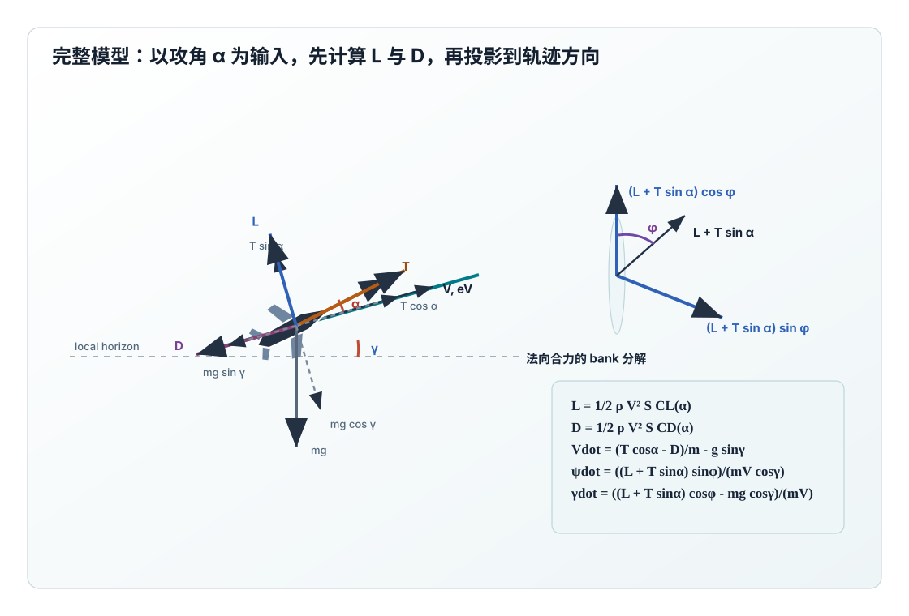
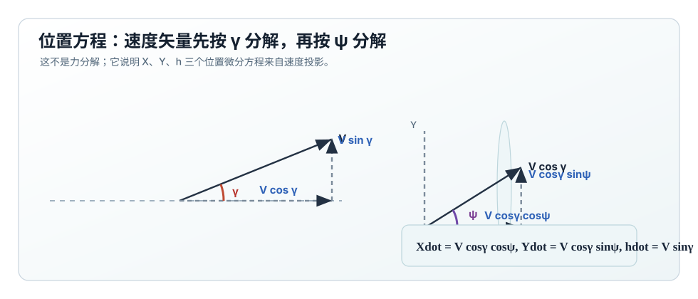
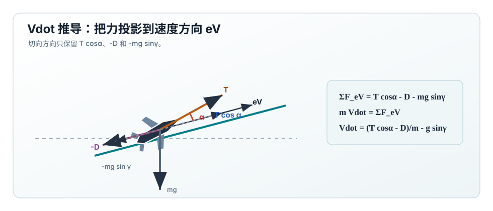
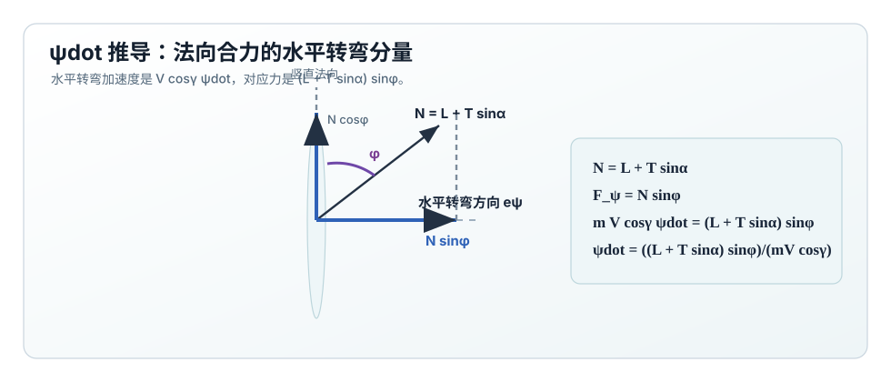
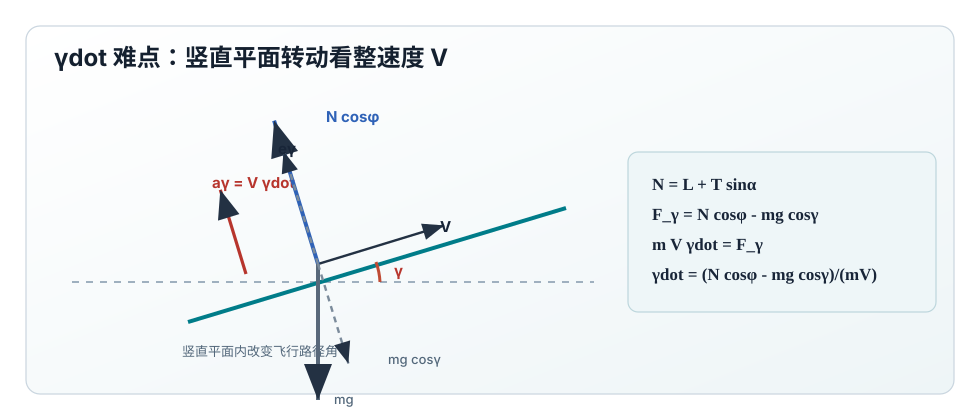
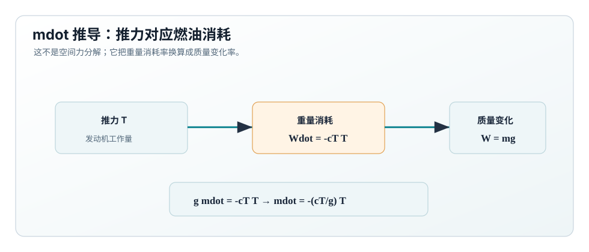

状态与控制
状态
\[
\mathbf{x} =
\begin{bmatrix}
X & Y & h & V & \psi & \gamma & m
\end{bmatrix}^{T}
\]
控制输入
\[
\mathbf{u}_{\alpha} =
\begin{bmatrix}
T & \phi & \alpha
\end{bmatrix}^{T}
\]
这里 \(\alpha\) 是输入，不是由 \(n\) 反推的诊断量。
补全 \(L\) 与 \(D\) 的计算
源 Markdown 中完整模型直接使用 \(L\) 和 \(D\)。为了让模型可计算，需要先定义动压：
\[
q = \frac12 \rho(h)V^2
\]
然后由攻角得到升力系数和阻力系数。最小可用的线性段模型是：
\[
C_L(\alpha)=C_{L0}+C_{L\alpha}\alpha
\]
\[
C_D(\alpha)=C_{D0}+kC_L(\alpha)^2
\]
于是升力和阻力为：
\[
\boxed{L=qSC_L(\alpha)=\frac12\rho(h)V^2SC_L(\alpha)}
\]
\[
\boxed{D=qSC_D(\alpha)=\frac12\rho(h)V^2SC_D(\alpha)}
\]
这一步是完整模型和简化模型的连接点。若想看简化模型如何从 \(n\) 反推出
\(C_{L,\mathrm{req}}\) 和 \(\alpha_{\mathrm{req}}\)，跳到
简化模型的连接段。

力分解图由 Python 脚本生成。切向力决定 \(\dot V\)，法向合力
\(L+T\sin\alpha\) 经 bank angle \(\phi\) 分解后决定 \(\dot\psi\) 和 \(\dot\gamma\)。
微分方程总览
下面先列出完整方程，随后逐项推导。保留源文档中的风项时，位置方程为：
\[
\dot X = V\cos\psi\cos\gamma+\omega_x,\quad
\dot Y = V\sin\psi\cos\gamma+\omega_y,\quad
\dot h = V\sin\gamma+\omega_z
\]
若与当前无风 simulator 对齐，可令 \(\omega_x=\omega_y=\omega_z=0\)。动力学核心为：
\[
\boxed{
\dot V =
\frac{T\cos\alpha-D}{m}-g\sin\gamma
}
\]
\[
\boxed{
\dot\psi =
\frac{(L+T\sin\alpha)\sin\phi}{mV\cos\gamma}
}
\]
\[
\boxed{
\dot\gamma =
\frac{(L+T\sin\alpha)\cos\phi-mg\cos\gamma}{mV}
}
\]
\[
\dot m = -\frac{c_T}{g}T
\quad \text{或短时仿真中令}\quad
\dot m=0
\]
位置方程推导
飞机速度大小为 \(V\)，飞行路径角 \(\gamma\) 表示速度矢量相对水平面的夹角。
因此速度的水平投影大小是：

位置方程不来自外力，而来自速度矢量的几何分解：先由 \(\gamma\) 得到水平和竖直速度，
再由 \(\psi\) 把水平速度分到 \(X,Y\) 方向。
\[
V_{\mathrm{horizontal}}=V\cos\gamma
\]
航向角 \(\psi\) 再把这个水平速度分解到 \(X\) 与 \(Y\) 两个水平轴：
\[
\dot X_{\mathrm{air}}=V\cos\gamma\cos\psi
\]
\[
\dot Y_{\mathrm{air}}=V\cos\gamma\sin\psi
\]
竖直速度直接来自速度矢量在竖直方向的投影：
\[
\dot h_{\mathrm{air}}=V\sin\gamma
\]
如果保留风速分量 \((\omega_x,\omega_y,\omega_z)\)，地面坐标中的位置变化率就是空速贡献加风速贡献：
\[
\boxed{\dot X=V\cos\gamma\cos\psi+\omega_x}
\]
\[
\boxed{\dot Y=V\cos\gamma\sin\psi+\omega_y}
\]
\[
\boxed{\dot h=V\sin\gamma+\omega_z}
\]
\(\dot V\) 推导：沿速度方向的力
\(\dot V\) 描述速度大小如何变化，只看沿速度方向 \(e_V\) 的力。
推力轴与速度方向夹角为 \(\alpha\)，所以推力的切向分量是：

\(\dot V\) 只看切向：\(T\cos\alpha\) 加速，\(D\) 和 \(mg\sin\gamma\) 减速。
\[
T_{\parallel}=T\cos\alpha
\]
阻力总是沿速度反方向，切向贡献为 \(-D\)。重力竖直向下，它在速度方向上的投影为：
\[
W_{\parallel}=-mg\sin\gamma
\]
将这些切向力代入牛顿第二定律：
\[
m\dot V=T\cos\alpha-D-mg\sin\gamma
\]
\[
\boxed{
\dot V=\frac{T\cos\alpha-D}{m}-g\sin\gamma
}
\]
\(\dot\psi\) 推导：水平转弯方向的力
航向角 \(\psi\) 是水平面内的速度方向。真正参与水平转弯的是水平速度
\(V\cos\gamma\)。如果航向角以 \(\dot\psi\) 变化，水平转弯加速度大小为：

法向合力 \(N=L+T\sin\alpha\) 经 bank angle \(\phi\) 倾斜后，
其中 \(N\sin\phi\) 是改变航向角的水平转弯分量。
\[
a_{\psi}=V\cos\gamma\dot\psi
\]
升力 \(L\) 垂直于速度方向；推力的法向分量是 \(T\sin\alpha\)。
二者合成法向力：
\[
N=L+T\sin\alpha
\]
bank angle \(\phi\) 把法向力倾斜，其中水平转弯方向分量为：
\[
N_{\psi}=N\sin\phi=(L+T\sin\alpha)\sin\phi
\]
对水平转弯方向写牛顿第二定律：
\[
mV\cos\gamma\dot\psi=(L+T\sin\alpha)\sin\phi
\]
\[
\boxed{
\dot\psi=
\frac{(L+T\sin\alpha)\sin\phi}{mV\cos\gamma}
}
\]
\(\dot\gamma\) 推导：竖直法向方向的力
飞行路径角 \(\gamma\) 是速度矢量在竖直平面内的仰角。
当 \(\gamma\) 以 \(\dot\gamma\) 变化时，垂直于速度的竖直平面加速度大小为：

\(\dot\gamma\) 来自竖直法向力差：
\((L+T\sin\alpha)\cos\phi\) 向上改变轨迹，\(mg\cos\gamma\) 向下压低轨迹。
\[
a_{\gamma}=V\dot\gamma
\]
法向合力 \(N=L+T\sin\alpha\) 的竖直平面分量是 \(N\cos\phi\)。
重力在这个法向方向上的反向分量是 \(mg\cos\gamma\)。因此：
\[
N_{\gamma}=(L+T\sin\alpha)\cos\phi
\]
\[
W_{\gamma}=-mg\cos\gamma
\]
对竖直法向方向写牛顿第二定律：
\[
mV\dot\gamma=(L+T\sin\alpha)\cos\phi-mg\cos\gamma
\]
\[
\boxed{
\dot\gamma=
\frac{(L+T\sin\alpha)\cos\phi-mg\cos\gamma}{mV}
}
\]
\(\dot m\) 推导：燃油消耗项
如果需要质量变化，可从重量 \(W=mg\) 开始。教材中常把重量消耗率写成：

质量方程不是空间方向上的力分解，而是由推力对应的燃油消耗率换算得到。
\[
\dot W=-c_TT
\]
因为 \(g\) 近似常数，\(\dot W=g\dot m\)，所以：
\[
g\dot m=-c_TT
\]
\[
\boxed{\dot m=-\frac{c_T}{g}T}
\]
短时轨迹仿真可以忽略燃油消耗，取 \(\dot m=0\)。
完整模型的 stall 条件
因为 \(\alpha\) 是输入，所以 stall 可以直接由临界迎角定义：
\[
\boxed{\alpha \ge \alpha_{\mathrm{crit}}\Rightarrow \mathrm{stall}}
\]
等价地，也可以写成最大升力系数约束：
\[
C_L(\alpha)\ge C_{L,\max}
\]
如果希望 stall 真实改变轨迹，不能只输出 warning。动力学中应使用
post-stall 的 \(C_{L,\mathrm{actual}}\) 和 \(C_{D,\mathrm{actual}}\)：
\[
C_{L,\mathrm{actual}}(\alpha)=
\begin{cases}
C_{L0}+C_{L\alpha}\alpha, & \alpha < \alpha_{\mathrm{crit}}\\
C_{L,\max}-k_{\mathrm{stall}}(\alpha-\alpha_{\mathrm{crit}}), & \alpha \ge \alpha_{\mathrm{crit}}
\end{cases}
\]
\[
C_{D,\mathrm{actual}}(\alpha)=
C_{D0}+kC_{L,\mathrm{actual}}^2+
C_{D,\mathrm{stall}}\max(0,\alpha-\alpha_{\mathrm{crit}})^2
\]
这个 3-DOF 模型没有 pitch rate、elevator 和俯仰力矩，所以它不能自然模拟
“机头下沉恢复”的姿态动态；但通过降低 \(C_L\)、增大 \(C_D\)，可以让轨迹表现出
失速后的下沉、减速和转弯能力下降。
与简化模型的连接
在 \(\alpha\) 较小、\(T\sin\alpha\) 可忽略时，完整模型可映射成一个等效载荷因子：
\[
n_{\mathrm{eq}}
=
\frac{L}{mg}
=
\frac{\frac12\rho V^2SC_L(\alpha)}{mg}
\]
这就是 简化模型
中 \(L=nmg\) 的来源。差别是：完整模型命令 \(\alpha\)，简化模型命令 \(n\)。
完整模型验证用控制参数
| 验证目标 | 控制设置 | 预期动力学响应 |
|---|
| 近似平飞 trim |
\(\phi=0\)，\(\alpha=\alpha_{\mathrm{trim}}\)，\(T\approx D\) |
\(\dot\gamma\approx0\)、\(\dot V\approx0\)、高度基本稳定。这里 \(\alpha_{\mathrm{trim}}\) 由 \(L+T\sin\alpha\approx mg\) 解出。 |
| 推力加速 |
\(\phi=0\)，\(\alpha\) 保持 trim 附近，\(T>D\) |
\(\dot V>0\)，若升力没有同步调整，\(\gamma\) 会随速度变化出现缓慢偏移。 |
| 协调转弯 |
\(\phi=25^\circ\)，提高 \(\alpha\) 使 \((L+T\sin\alpha)\cos\phi\approx mg\cos\gamma\) |
\(\dot\psi>0\)，且 \(\dot\gamma\approx0\)。若 \(\alpha\) 不提高，飞机会下沉。 |
| stall 轨迹响应 |
\(\alpha>\alpha_{\mathrm{crit}}\)，\(T\) 不足以抵消新增阻力 |
\(C_L\) 不再线性增加，\(C_D\) 增大，表现为 \(\dot V<0\)、\(\dot\gamma<0\)、转弯率低于正常段。 |